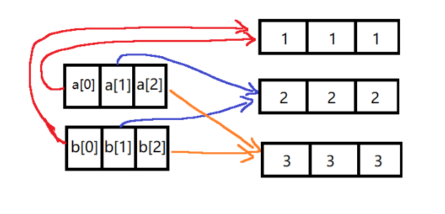

<!DOCTYPE html>
<html>
<head><meta name="generator" content="Hexo 3.8.0">
  <meta charset="utf-8">
  

  
  <title>Java中二维数组的复制（深拷贝与浅拷贝） | Pyrrhax的个人博客</title>
  <meta name="viewport" content="width=device-width, initial-scale=1, maximum-scale=1">
  <meta name="description" content="最近在做一道编程题的时候出现了一处bug。在这道题需要使用多种方法对同一个二维数组进行更改，找出使第二列数之和最大的更改方法。所以每次修改之前，我对原数组进行拷贝，修改的是数组的拷贝。可是程序写完之后，运行结果却出乎意料的是错误的。看了几遍程序流程，觉得逻辑上没有错误。于是打开debug模式一步步看数值变化。调试时发现在第二次循环中，数组本该为0的位置，值却被改成了1,而这是第一次进行修改的结果。">
<meta name="keywords" content="Java,函数">
<meta property="og:type" content="article">
<meta property="og:title" content="Java中二维数组的复制（深拷贝与浅拷贝）">
<meta property="og:url" content="http://yoursite.com/2019/04/13/Java中二维数组的复制（深拷贝与浅拷贝）/index.html">
<meta property="og:site_name" content="Pyrrhax的个人博客">
<meta property="og:description" content="最近在做一道编程题的时候出现了一处bug。在这道题需要使用多种方法对同一个二维数组进行更改，找出使第二列数之和最大的更改方法。所以每次修改之前，我对原数组进行拷贝，修改的是数组的拷贝。可是程序写完之后，运行结果却出乎意料的是错误的。看了几遍程序流程，觉得逻辑上没有错误。于是打开debug模式一步步看数值变化。调试时发现在第二次循环中，数组本该为0的位置，值却被改成了1,而这是第一次进行修改的结果。">
<meta property="og:locale" content="zh_CN">
<meta property="og:image" content="http://yoursite.com/2019/04/13/Java中二维数组的复制（深拷贝与浅拷贝）/clone1.png">
<meta property="og:image" content="http://yoursite.com/2019/04/13/Java中二维数组的复制（深拷贝与浅拷贝）/Java中二维数组的复制（深拷贝与浅拷贝）/clone2.png">
<meta property="og:updated_time" content="2018-08-30T18:46:56.000Z">
<meta name="twitter:card" content="summary">
<meta name="twitter:title" content="Java中二维数组的复制（深拷贝与浅拷贝）">
<meta name="twitter:description" content="最近在做一道编程题的时候出现了一处bug。在这道题需要使用多种方法对同一个二维数组进行更改，找出使第二列数之和最大的更改方法。所以每次修改之前，我对原数组进行拷贝，修改的是数组的拷贝。可是程序写完之后，运行结果却出乎意料的是错误的。看了几遍程序流程，觉得逻辑上没有错误。于是打开debug模式一步步看数值变化。调试时发现在第二次循环中，数组本该为0的位置，值却被改成了1,而这是第一次进行修改的结果。">
<meta name="twitter:image" content="http://yoursite.com/2019/04/13/Java中二维数组的复制（深拷贝与浅拷贝）/clone1.png">
  
    <link rel="alternate" href="/atom.xml" title="Pyrrhax的个人博客" type="application/atom+xml">
  
  
    <link rel="icon" href="/favicon.png">
  
  
    <link href="//fonts.googleapis.com/css?family=Source+Code+Pro" rel="stylesheet" type="text/css">
  
  <link rel="stylesheet" href="/css/style.css">
</head>
</html>
<body>
  <div id="container">
    <div id="wrap">
      <header id="header">
  <div id="banner"></div>
  <div id="header-outer" class="outer">
    <div id="header-title" class="inner">
      <h1 id="logo-wrap">
        <a href="/" id="logo">Pyrrhax的个人博客</a>
      </h1>
      
        <h2 id="subtitle-wrap">
          <a href="/" id="subtitle">命数如织，当为磐石。</a>
        </h2>
      
    </div>
    <div id="header-inner" class="inner">
      <nav id="main-nav">
        <a id="main-nav-toggle" class="nav-icon"></a>
        
          <a class="main-nav-link" href="/">Home</a>
        
          <a class="main-nav-link" href="/archives">Archives</a>
        
      </nav>
      <nav id="sub-nav">
        
          <a id="nav-rss-link" class="nav-icon" href="/atom.xml" title="RSS Feed"></a>
        
        <a id="nav-search-btn" class="nav-icon" title="Search"></a>
      </nav>
      <div id="search-form-wrap">
        <form action="//google.com/search" method="get" accept-charset="UTF-8" class="search-form"><input type="search" name="q" class="search-form-input" placeholder="Search"><button type="submit" class="search-form-submit">&#xF002;</button><input type="hidden" name="sitesearch" value="http://yoursite.com"></form>
      </div>
    </div>
  </div>
</header>
      <div class="outer">
        <section id="main"><article id="post-Java中二维数组的复制（深拷贝与浅拷贝）" class="article article-type-post" itemscope itemprop="blogPost">
  <div class="article-meta">
    <a href="/2019/04/13/Java中二维数组的复制（深拷贝与浅拷贝）/" class="article-date">
  <time datetime="2019-04-13T02:32:48.859Z" itemprop="datePublished">2019-04-13</time>
</a>
    
  <div class="article-category">
    <a class="article-category-link" href="/categories/编程语言/">编程语言</a>►<a class="article-category-link" href="/categories/编程语言/Java/">Java</a>
  </div>

  </div>
  <div class="article-inner">
    
    
      <header class="article-header">
        
  
    <h1 class="article-title" itemprop="name">
      Java中二维数组的复制（深拷贝与浅拷贝）
    </h1>
  

      </header>
    
    <div class="article-entry" itemprop="articleBody">
      
        <p>最近在做一道编程题的时候出现了一处bug。在这道题需要使用多种方法对同一个二维数组进行更改，找出使第二列数之和最大的更改方法。所以每次修改之前，我对原数组进行拷贝，修改的是数组的拷贝。可是程序写完之后，运行结果却出乎意料的是错误的。看了几遍程序流程，觉得逻辑上没有错误。于是打开debug模式一步步看数值变化。调试时发现在第二次循环中，数组本该为0的位置，值却被改成了1,而这是第一次进行修改的结果。此时顿悟，想起很久之前学过的深拷贝和浅拷贝，绝对是clone()的问题。<br><a id="more"></a><br>我们重现一下当时的问题，上代码：<br><figure class="hljs highlight cs"><table><tr><td class="gutter"><pre><span class="line">1</span><br><span class="line">2</span><br><span class="line">3</span><br><span class="line">4</span><br><span class="line">5</span><br><span class="line">6</span><br><span class="line">7</span><br><span class="line">8</span><br><span class="line">9</span><br><span class="line">10</span><br><span class="line">11</span><br><span class="line">12</span><br><span class="line">13</span><br><span class="line">14</span><br><span class="line">15</span><br><span class="line">16</span><br><span class="line">17</span><br><span class="line">18</span><br><span class="line">19</span><br><span class="line">20</span><br></pre></td><td class="code"><pre><code class="hljs undefined"><span class="hljs-keyword">public</span> <span class="hljs-keyword">class</span> <span class="hljs-title">cloneTeset</span> &#123;<br>    <span class="hljs-function"><span class="hljs-keyword">public</span> <span class="hljs-keyword">static</span> <span class="hljs-keyword">void</span> <span class="hljs-title">main</span>(<span class="hljs-params">String[] args</span>)</span> &#123;<br>        <span class="hljs-keyword">int</span> a[][] = &#123;&#123;<span class="hljs-number">0</span>,<span class="hljs-number">0</span>,<span class="hljs-number">0</span>&#125;,&#123;<span class="hljs-number">1</span>,<span class="hljs-number">1</span>,<span class="hljs-number">1</span>&#125;,&#123;<span class="hljs-number">2</span>,<span class="hljs-number">2</span>,<span class="hljs-number">2</span>&#125;&#125;;<br>        <span class="hljs-keyword">int</span> b[][] = a.clone();<br>        b[<span class="hljs-number">1</span>][<span class="hljs-number">1</span>]=<span class="hljs-number">3</span>;<br>        <span class="hljs-keyword">for</span>(<span class="hljs-keyword">int</span> i=<span class="hljs-number">0</span>;i&lt;<span class="hljs-number">3</span>;i++)&#123;<br>            <span class="hljs-keyword">for</span>(<span class="hljs-keyword">int</span> j=<span class="hljs-number">0</span>;j&lt;<span class="hljs-number">3</span>;j++)&#123;<br>                System.<span class="hljs-keyword">out</span>.print(a[i][j]+<span class="hljs-string">" "</span>);<br>            &#125;<br>            System.<span class="hljs-keyword">out</span>.print(<span class="hljs-string">" "</span>);<br>        &#125;<br>        System.<span class="hljs-keyword">out</span>.println();<br>        <span class="hljs-keyword">for</span>(<span class="hljs-keyword">int</span> i=<span class="hljs-number">0</span>;i&lt;<span class="hljs-number">3</span>;i++)&#123;<br>            <span class="hljs-keyword">for</span>(<span class="hljs-keyword">int</span> j=<span class="hljs-number">0</span>;j&lt;<span class="hljs-number">3</span>;j++)&#123;<br>                System.<span class="hljs-keyword">out</span>.print(b[i][j]+<span class="hljs-string">" "</span>);<br>            &#125;<br>            System.<span class="hljs-keyword">out</span>.print(<span class="hljs-string">" "</span>);<br>        &#125;<br>    &#125;<br>&#125;<br></code></pre></td></tr></table></figure></p>
<p>输出结果是<br><figure class="hljs highlight basic"><table><tr><td class="gutter"><pre><span class="line">1</span><br><span class="line">2</span><br></pre></td><td class="code"><pre><code class="hljs undefined"><span class="hljs-symbol">0 </span><span class="hljs-number">0</span> <span class="hljs-number">0</span>  <span class="hljs-number">1</span> <span class="hljs-number">3</span> <span class="hljs-number">1</span>  <span class="hljs-number">2</span> <span class="hljs-number">2</span> <span class="hljs-number">2</span>  <br><span class="hljs-symbol">0 </span><span class="hljs-number">0</span> <span class="hljs-number">0</span>  <span class="hljs-number">1</span> <span class="hljs-number">3</span> <span class="hljs-number">1</span>  <span class="hljs-number">2</span> <span class="hljs-number">2</span> <span class="hljs-number">2</span><br></code></pre></td></tr></table></figure></p>
<p>可以发现,对a的拷贝b进行修改后，原数组a的值也被修改了。这是为什么呢？</p>
<p>首先我们知道，虽然数组的声明方式与其他对象有所不同，但它也是new出来的。在Java中，数组是一个对象。</p>
<p>查看官方文档，在Object的Clone()方法的描述中有这么两段话:</p>
<blockquote>
<p>By convention, the object returned by this method should be independent of this object (which is being cloned). To achieve this independence, it may be necessary to modify one or more fields of the object returned by super.clone before returning it. Typically, this means copying any mutable objects that comprise the internal “deep structure” of the object being cloned and replacing the references to these objects with references to the copies. If a class contains only primitive fields or references to immutable objects, then it is usually the case that no fields in the object returned by super.clone need to be modified.<br>一般来说，我们希望cloen()方法返回的对象相是独立于被克隆对象的，所以我们在返回clone方法前，应该对克隆出的对象的域进行一些修改。这通常意味着，复制被克隆对象所包含的所有内部深层结构的可变对象，并且将域中的引用，指向这些复制出的对象。如果一个类只包含基础类型或者指向不可变对象的引用，那么将不用修改Super.clone()的返回结果。</p>
</blockquote>
<p>注：不可变对象有哪些？<br>String对象都是不可变对象。<br>原始类型包装类（primitive wrappers）（Integer，Long, Short, Double, Float, Character, Byte, Boolean）也都是不可变的。<br>关键字final用于声明基本类型和对象引用为不可变对象，但是它不能使对象本身变为不可变对象。</p>
<p>我们再看下一段：</p>
<blockquote>
<p>The method clone for class Object performs a specific cloning operation. First, if the class of this object does not implement the interface Cloneable, then a CloneNotSupportedException is thrown. Note that all arrays are considered to implement the interface Cloneable and that the return type of the clone method of an array type T[] is T[] where T is any reference or primitive type. Otherwise, this method creates a new instance of the class of this object and initializes all its fields with exactly the contents of the corresponding fields of this object, as if by assignment; the contents of the fields are not themselves cloned. Thus, this method performs a “shallow copy” of this object, not a “deep copy” operation. Thus, this method performs a “shallow copy” of this object, not a “deep copy” operation.<br>clone()方法首先会判断一个对象是否实现了Cloneable接口，如果没有实现，则会抛出CloneNotSupportedException。而所有的数组都默认实现了Cloneable接口。如果对数组T[]进行克隆，返回结果是T[]，T是引用或者基本类型。如果对对象进行克隆，首先会新建一个这个类的实例，然后根据这个对象中域的内容来对新建的实例进行初始化（赋值操作）。因此clone（）这个方法实现了浅拷贝，并不是深拷贝。</p>
</blockquote>
<p>从以上两段话我们可以看出：<br>clone( )方法创建调用它的对象的一个复制副本。只有那些实现Cloneable接口的类能被复制。<br>如果对数组T[]进行克隆，返回结果是T[]，T是引用或者基本类型。<br>我们克隆的数组是二维数组，即数组的数组。对于clone()方法来说，这里的T[]，T是一个对数组的引用。<br>也就是说：我们克隆出来的数组的第一维度，和原来那个数组的第一维度。同时指向了同一个第二位度的数组。<br>如下图：</p>
<p>因此当改变数组b的时候，数组a也被改变。此时的引用关系图如下：</p>
<p></p>
<p>所以，为了实现二维数组的克隆，我们需要分别对第二维度的每一个数组进行克隆。<br>实现如下：<br><figure class="hljs highlight markdown"><table><tr><td class="gutter"><pre><span class="line">1</span><br><span class="line">2</span><br><span class="line">3</span><br><span class="line">4</span><br></pre></td><td class="code"><pre><code class="hljs undefined">int b[<span class="hljs-string"></span>][<span class="hljs-symbol"></span>] = new int[<span class="hljs-string">a.length</span>][<span class="hljs-symbol"></span>];<br>for(int i=0;i<span class="xml"><span class="hljs-tag">&lt;<span class="hljs-name">a.length;i++)&#123;</span><br>	<span class="hljs-attr">b</span>[<span class="hljs-attr">i</span>]=<span class="hljs-string">a[i].clone();</span><br>&#125;</span></span><br></code></pre></td></tr></table></figure></p>
<p>将之前代码的复制部分改为以上实现，输出结果如下：<br><figure class="hljs highlight basic"><table><tr><td class="gutter"><pre><span class="line">1</span><br><span class="line">2</span><br></pre></td><td class="code"><pre><code class="hljs undefined"><span class="hljs-symbol">0 </span><span class="hljs-number">0</span> <span class="hljs-number">0</span>  <span class="hljs-number">1</span> <span class="hljs-number">1</span> <span class="hljs-number">1</span>  <span class="hljs-number">2</span> <span class="hljs-number">2</span> <span class="hljs-number">2</span>  <br><span class="hljs-symbol">0 </span><span class="hljs-number">0</span> <span class="hljs-number">0</span>  <span class="hljs-number">1</span> <span class="hljs-number">3</span> <span class="hljs-number">1</span>  <span class="hljs-number">2</span> <span class="hljs-number">2</span> <span class="hljs-number">2</span><br></code></pre></td></tr></table></figure></p>
<p>可以看出使用这种方法，实现了深拷贝，两个数组相互独立，不会互相影响。<br>同样的，Java提供的Arrays.copyof()方法对于二维数组也是浅拷贝，也需要我们为数组中的每一项进行copy。<br>此时的引用关系如下图：<br></p>

      
    </div>
    <footer class="article-footer">
      <a data-url="http://yoursite.com/2019/04/13/Java中二维数组的复制（深拷贝与浅拷贝）/" data-id="cjuewnv530000qgosi5wmtaua" class="article-share-link">Share</a>
      
      
  <ul class="article-tag-list"><li class="article-tag-list-item"><a class="article-tag-list-link" href="/tags/Java/">Java</a></li><li class="article-tag-list-item"><a class="article-tag-list-link" href="/tags/函数/">函数</a></li></ul>

    </footer>
  </div>
  
    
<nav id="article-nav">
  
    <a href="/2019/04/13/【编程题】网易2019笔试：瞌睡/" id="article-nav-newer" class="article-nav-link-wrap">
      <strong class="article-nav-caption">Newer</strong>
      <div class="article-nav-title">
        
          【编程题】网易2019笔试：瞌睡
        
      </div>
    </a>
  
  
</nav>

  
</article>

</section>
        
          <aside id="sidebar">
  
    
  <div class="widget-wrap">
    <h3 class="widget-title">Categories</h3>
    <div class="widget">
      <ul class="category-list"><li class="category-list-item"><a class="category-list-link" href="/categories/游戏/">游戏</a></li><li class="category-list-item"><a class="category-list-link" href="/categories/编程语言/">编程语言</a><ul class="category-list-child"><li class="category-list-item"><a class="category-list-link" href="/categories/编程语言/Java/">Java</a></li></ul></li><li class="category-list-item"><a class="category-list-link" href="/categories/编程题/">编程题</a><ul class="category-list-child"><li class="category-list-item"><a class="category-list-link" href="/categories/编程题/笔试/">笔试</a></li></ul></li><li class="category-list-item"><a class="category-list-link" href="/categories/网络运维/">网络运维</a><ul class="category-list-child"><li class="category-list-item"><a class="category-list-link" href="/categories/网络运维/Hexo/">Hexo</a></li></ul></li><li class="category-list-item"><a class="category-list-link" href="/categories/翻译/">翻译</a></li></ul>
    </div>
  </div>


  
    
  <div class="widget-wrap">
    <h3 class="widget-title">Tags</h3>
    <div class="widget">
      <ul class="tag-list"><li class="tag-list-item"><a class="tag-list-link" href="/tags/Hexo/">Hexo</a></li><li class="tag-list-item"><a class="tag-list-link" href="/tags/Java/">Java</a></li><li class="tag-list-item"><a class="tag-list-link" href="/tags/函数/">函数</a></li><li class="tag-list-item"><a class="tag-list-link" href="/tags/多线程/">多线程</a></li><li class="tag-list-item"><a class="tag-list-link" href="/tags/搭建/">搭建</a></li><li class="tag-list-item"><a class="tag-list-link" href="/tags/沙盒/">沙盒</a></li><li class="tag-list-item"><a class="tag-list-link" href="/tags/生存/">生存</a></li><li class="tag-list-item"><a class="tag-list-link" href="/tags/科幻/">科幻</a></li><li class="tag-list-item"><a class="tag-list-link" href="/tags/编程题/">编程题</a></li><li class="tag-list-item"><a class="tag-list-link" href="/tags/翻译/">翻译</a></li></ul>
    </div>
  </div>


  
    
  <div class="widget-wrap">
    <h3 class="widget-title">Tag Cloud</h3>
    <div class="widget tagcloud">
      <a href="/tags/Hexo/" style="font-size: 20px;">Hexo</a> <a href="/tags/Java/" style="font-size: 10px;">Java</a> <a href="/tags/函数/" style="font-size: 10px;">函数</a> <a href="/tags/多线程/" style="font-size: 10px;">多线程</a> <a href="/tags/搭建/" style="font-size: 10px;">搭建</a> <a href="/tags/沙盒/" style="font-size: 10px;">沙盒</a> <a href="/tags/生存/" style="font-size: 10px;">生存</a> <a href="/tags/科幻/" style="font-size: 10px;">科幻</a> <a href="/tags/编程题/" style="font-size: 20px;">编程题</a> <a href="/tags/翻译/" style="font-size: 10px;">翻译</a>
    </div>
  </div>

  
    
  <div class="widget-wrap">
    <h3 class="widget-title">Archives</h3>
    <div class="widget">
      <ul class="archive-list"><li class="archive-list-item"><a class="archive-list-link" href="/archives/2019/04/">四月 2019</a></li></ul>
    </div>
  </div>


  
    
  <div class="widget-wrap">
    <h3 class="widget-title">Recent Posts</h3>
    <div class="widget">
      <ul>
        
          <li>
            <a href="/2019/04/13/我翻译的文章在这里/">我翻译的文章在这里</a>
          </li>
        
          <li>
            <a href="/2019/04/13/用Hexo+GitHubPages搭建博客/">用Hexo和GitHubPages搭建博客</a>
          </li>
        
          <li>
            <a href="/2019/04/13/关于Java多线程两种实现方式的一点想法/">关于Java多线程两种实现方式的一点想法</a>
          </li>
        
          <li>
            <a href="/2019/04/13/在Hexo文章中插入图片/">在Hexo文章中插入图片</a>
          </li>
        
          <li>
            <a href="/2019/04/13/We are different,but we go together.----《深海迷航》/">We are different,but we go together.----《深海迷航》</a>
          </li>
        
      </ul>
    </div>
  </div>

  
</aside>
        
      </div>
      <footer id="footer">
  
  <div class="outer">
    <div id="footer-info" class="inner">
      &copy; 2019 Pyrrhax<br>
      Powered by <a href="http://hexo.io/" target="_blank">Hexo</a>
    </div>
  </div>
</footer>
    </div>
    <nav id="mobile-nav">
  
    <a href="/" class="mobile-nav-link">Home</a>
  
    <a href="/archives" class="mobile-nav-link">Archives</a>
  
</nav>
    

<script src="//ajax.googleapis.com/ajax/libs/jquery/2.0.3/jquery.min.js"></script>


  <link rel="stylesheet" href="/fancybox/jquery.fancybox.css">
  <script src="/fancybox/jquery.fancybox.pack.js"></script>


<script src="/js/script.js"></script>


  </div>
</body>
</html>